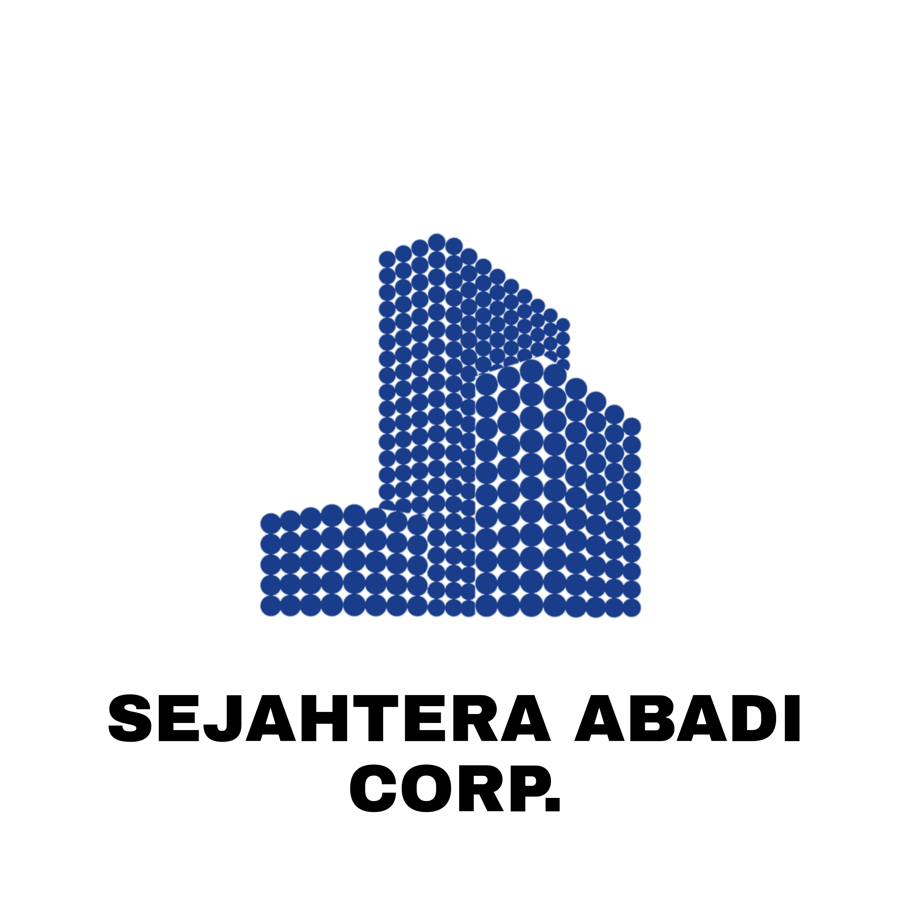

ABOUT
website ini dibuat untuk memenuhi tugas kuliah dari kak wanna yang saya buat berdasarkan profile company..
CV SEJAHTERA ABADI is a world leader in concessions, energy and construction, active in nearly 120 countries. Our ambition, in response to the climate emergency, is to accelerate the transformation of living environments, infrastructure and mobility.We also aim to foster social progress by being a humanist group that exemplifies inclusion and solidarity. Powered by our economic performance and the engagement of our 260,000 employees, we forge a more sustainable world and fully embrace our role as a private sector partner working in the public interest.
We make health and safety the utmost priority on all our worksites and production sites every single day; that’s the idea behind our Safety First commitment.Our safety culture is founded on three pillars:Transparency Exemplarity Dialogue
We are all working towards our shared goal of zero accidents.
A GLOBAL LEADER OF IN CONSTRUCTION
Acting as a positive force for all, we build structures to accompany the transitions of our era – environmental, energy and digital. Steeped in a culture of builders, our teams strive and innovate every day to assist our customers as well as the end-users.